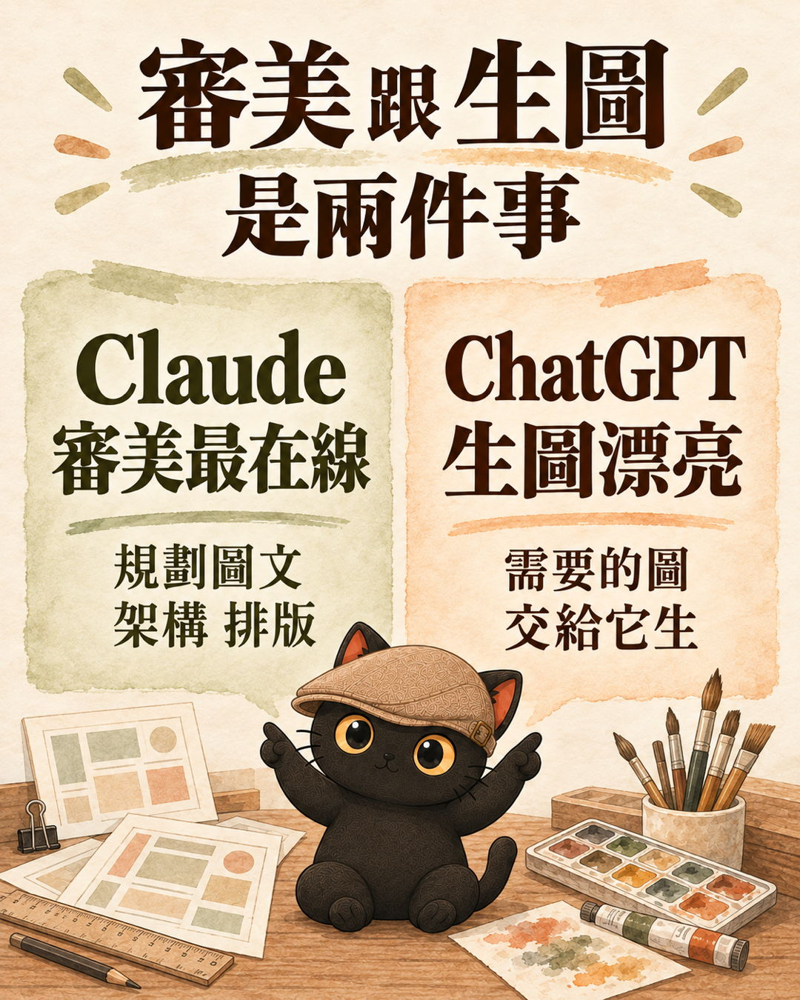
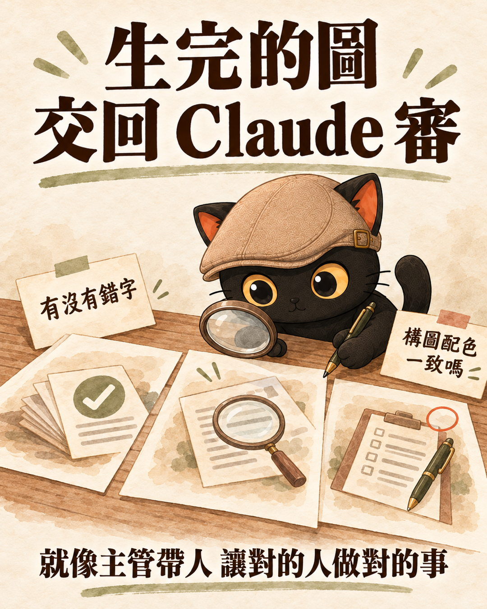
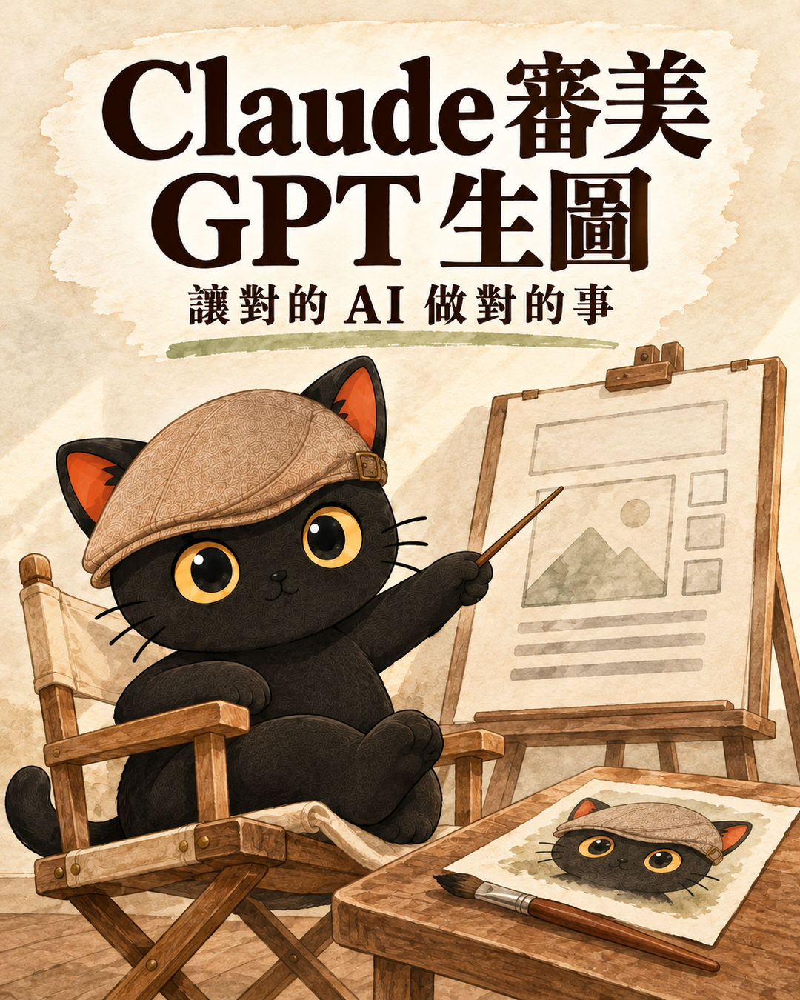

一位朋友問我：「用 Claude 做簡報，美感有比較好嗎？」我回答時把它拆成兩件事：審美能力跟生圖能力。這篇從這個問題出發，再加上我平常怎麼分配不同 AI 的幾個例子，講我對「學 AI」的理解。
- 手上同時有好幾個 AI，不知道什麼事該交給哪一個。
- 覺得某個 AI 生的圖不好看、查資料不準，想知道是不是用錯地方。
- 想用 AI 做客服或自動化，不確定要選貴的還是便宜的模型。
- 管過團隊，想知道帶人的經驗能不能用在 AI 身上。
- 用 AI 跟用人是一模一樣的。比的是組織分工的能力、分工合作的能力，還有規劃工作流程的能力。
- 每一家 AI 有不同的長處，同一家的不同等級也適合做不同的事。
- 知道每個 AI 的特性，讓對的 AI 做對的事，讓它們分工合作。
例子一：Claude 做簡報的審美，跟 ChatGPT 的生圖，是兩件事
朋友問我，用 Claude 做簡報美感有比較好嗎？我真的覺得壓倒性的好。
朋友又問：可是它生成的圖片不好看，ChatGPT 生的圖片比較好看。
對，因為要分成兩件事：審美能力跟生圖能力。Claude 的審美最在線，ChatGPT 生圖漂亮。

| 能力 | 交給誰 | 做什麼 |
|---|---|---|
| 審美 | Claude | 規劃整體圖文、架構、排版 |
| 生圖 | ChatGPT（OpenAI 的生圖） | 需要的圖交給它生 |
| 審圖 | Claude | 看有沒有錯字、構圖配色是不是一致 |

ChatGPT 生的圖，我自己都不直接看，直接叫 Claude 去審：看有沒有錯字，整個構圖配色是不是一致。
這篇用到的三張咪卡圖卡，就是這樣做出來的：Claude 規劃分鏡和每張卡的文字，交給 OpenAI 的 Codex 生圖，生完再交回 Claude 逐張檢查文字與咪卡的樣子。
- 叫 AI 做簡報，為什麼最後還是自己一個字一個字改？：簡報做完之後怎麼改，從轉 PPT 自己改到連動 Google 簡報的半自動流程。
例子二：Gemini、Grok、GPT Astra、GPT Dots，每一家都有不同的長處
Gemini 查資料：當子代理去爬，只抓事實回來
很多人說 Gemini 會有幻覺，這是真的，Google 官方也承認。所以我現在是把 Gemini 當子代理（主模型派出去、專門做一件事的小幫手）去爬資料，只叫它把事實抓回來，不讓它做判斷。它要附上來源，查不到就說查不到。判斷和統整交給主模型。
為什麼爬 Google 的資料找它？因為 Gemini 有官方內建的「用 Google 搜尋接地」（Grounding with Google Search）功能：開啟這個功能時，它回答前會先去 Google 搜尋，照真實網頁回答並附來源。Google 官方說明這個功能就是用來降低幻覺的（官方文件、安全指引）。
Grok 查 X、GPT Astra 做 3D 模型、GPT Dots 當秘書長
| 要做的事 | 交給誰 | 為什麼 |
|---|---|---|
| 查國外比較快的消息 | Grok | 可以去爬 X 的推文 |
| 生成 3D 模型 | GPT Astra | 我覺得它現在操作建模、生成 3D 模型做得不錯 |
| 當我的秘書長 | GPT Dots | 手機、筆電、桌機之間的聯動，還有雲端 Agent 電腦跟本地電腦，都連接得很好 |
所以每一家還是會有差異，各有不同的長處。
例子三：同一家的模型，Opus 5.5 規劃、Haiku 當子代理爬幾百則留言
同一家模型也有不同等級，我會讓它們做不同的事。我現在很多事情都用 Haiku。它跟官方講的差不多：快、便宜，機械性的操作沒問題，螢幕操作也進步了。
| Anthropic 官方怎麼說 Haiku 5.5 | 內容 |
|---|---|
| 速度 | 官方說是 Haiku 系列到目前最快的 |
| 價格 | 平均運行成本比上一代 Haiku 4.5 低約 75% |
| 適合的工作 | 量大、在意成本、重複性的工作，例如摘要、分類、資料庫查詢 |
| 螢幕操作 | 電腦操作測驗（OSWorld 2.1 離線子集）從上一代的 15.7% 進步到 72.4% |
比如說我看到一篇講得超讚的貼文，它爆紅了，底下有幾百則留言，裡面有很多很棒的方法。我會這樣分工：
把要怎麼爬、爬什麼排好，讓它記住。
自己去爬那幾百則留言，這是很機械性的操作。
爬完再叫 Opus 5.5 統整大家的意見。
- 頂規 AI 模型很貴，哪些事交給它、哪些交給便宜的？：同樣是「貴的動腦、便宜的搬磚」，那篇用 Opus 5.5 和 Luna 講實際分工。
例子四：官網客服要用哪個模型，看客戶問題的難度
| 客戶問題的樣子 | 我的選法 |
|---|---|
| 固定的產品和服務，客戶問來問去就是那幾個問題，例如產品規格、大小 | Haiku 就好 |
| 問題比較複雜、比較抽象，例如我自己的知識官網 | Sonnet 5.5 |
- 官網 AI 客服要用哪個模型？：14 組重測的分數與費用，回答不好時先查規則和檢索。
用 AI，更像在規劃團隊合作：知人善用
其實我覺得現在用 AI，或者更準確地說用 Agent，真的更像在規劃團隊合作、規劃組織模式。
每個 AI 模型就是一個員工。我們要知 AI 善用，並且用人不疑，疑人不用。
就像主管帶人，讓對的人做對的事。現在要知道 AI 的特性，讓對的 AI 做對的事，讓它們分工合作。

要知道每個 AI 的特性，知道它們可以怎麼搭配：
- 誰有哪些長處
- 誰可以來當主管
- 誰能細心仔細
- 誰創意無限
所以現在 AI 大廠，也都直接把 AI 工具員工化、擬人化，幫助大家更好地進入情境。
- 如何訓練自己的 AI 員工：員工＋顧問框架：把 AI 當員工之後，下一步是怎麼訓練它。
- 讓 AI 只做需要判斷的事，其他交給程式：分工不只發生在 AI 之間，也發生在 AI 和程式之間。